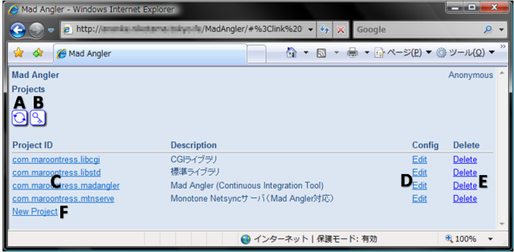

Mad Angler
管理コンソールの使い方
1. プロジェクト一覧

- A) プロジェクト一覧の更新
- アイコンをクリックすると、テーブルの内容を再読み込みします。
- B) 公開鍵の表示
- アイコンをクリックすると、SSHの公開鍵をダイアログに表示します。
- C) プロジェクトのビルド一覧の表示
- Project IDのリンクをクリックすると、ビルドの一覧を表示します。
- D) プロジェクトの設定
- "Edit" のリンクをクリックすると、プロジェクト設定の画面を表示します。
- E) プロジェクトの消去
- "Delete" のリンクをクリックすると、プロジェクトを削除します。
- F) 新規プロジェクトの作成
- "New project" のリンクをクリックすると、新規プロジェクトを作成します。
2. プロジェクト作成
- A) Project ID
- プロジェクトIDを入力します。
- B) Initial Configuration
- "Empty" を選択すると、設定が空の状態でプロジェクトを生成します。
- 既存のプロジェクトがすでに1つ以上登録されている場合は、"Copied from another project" を選択することができます。その場合、選択したプロジェクトから初期設定をコピーした状態でプロジェクトを生成します。
3. プロジェクト設定
設定項目はタブによって次のように分割されています。
- Generic
- 一般設定を表示します。
- Platform
- プラットフォーム設定を表示します。
- メール設定を表示します。
3.1. 一般設定
- A) Description
- プロジェクトの概要を入力します。
- B) Notification URL
- ビルドを開始するためのURLを表示します。パラメータのREVISIONにはビルド対象となるリビジョンを指定します。AUTHORはコミットしたユーザ名を指定します（ビルド一覧で表示するときに使用されるだけで、ビルドには影響しません）。
3.2. プラットフォーム設定
- A) Platform ID
- プラットフォーム一覧を表示します。選択されているプラットフォームの内容が右側に表示されます。
- B) Add..
- プラットフォームを追加します。
- C) Delete
- 選択されているプラットフォームを削除します。
- D) Edit...
- 選択されているプラットフォームを編集します。
- E) Rename...
- 選択されているプラットフォームIDを変更します。
- F) Clone
- 選択されているプラットフォームを複製します。
- G) 上下の矢印
- 選択されているプラットフォームを上下に移動します。
3.3. プラットフォーム追加・編集のダイアログ

- A) Platform ID
- プラットフォームを識別するための名前を入力します。
- B) User@Hostname
- sshでリモートコマンドを実行するユーザ名とホスト名を@で連結したものを入力します。
- C) Command
- リモートコマンドのパスを入力します（引数は指定できません）。
- D) Charset
- リモートコマンドの出力するログの文字セットを選択します。
3.4. メール設定
- A) Enable sending mails
- オンにするとメールでビルドの結果を通知します。
- B) Sender (From)
- 通知するメールの差し出し人の名前を入力します。
- C) Recipient
- 通知するメールの受け取り先となるメールアドレスを入力します。
4. ビルド一覧
- A) ビルド一覧の更新
- アイコンをクリックすると、テーブルの内容を再読み込みします。
- B) ビルド一覧のテーブル
- ビルド一覧を10行ずつ表示します。ログを確認したいビルドの行をクリックすると、下部にビルドログを表示します。
- C) ページ切り替え
- ビルド一覧の表示を前のページ、次のページに切り替えます。
- D) 選択されたビルドの情報
- 選択されているビルドの日付、リビジョン、著者、ビルド結果を表示します。
- E) Display only the last part
- チェックをオンにするとログの最終部分（最後の20行）だけを表示します。オフにするとログ全体を表示します。
- F) ログ表示
- アイコンをクリックすると、ログだけを表示します。
- G) プラットフォームの切り替えのタブ
- タブを選択してプラットフォームを切り替えます。
- H) ログ
- 選択されているビルドのプラットフォーム毎のログを表示します。
5. ビルドログ
- A) ビルドの情報
- ビルドの日付、リビジョン、著者、ビルド結果を表示します。
- B) Display only the last part
- チェックをオンにするとログの最終部分（最後の20行）だけを表示します。オフにするとログ全体を表示します。
- C) プラットフォームの切り替えのタブ
- タブを選択してプラットフォームを切り替えます。
- D) ログ
- プラットフォーム毎のログを表示します。